20-06-24 - Yao_et_al.-2020-MHW in China Marginal Sea
Ref: Yao, Yulong, et al. “Marine Heatwaves in China’s Marginal Seas and Adjacent Offshore Waters: Past, Present, and Future.” Journal of Geophysical Research: Oceans 125.3 (2020): e2019JC015801., https://doi.org/10.1029/2019JC015801
1. What data did the author use in this paper?
- SST: OISST, HadISST1, COBE SST2
- Model data: ERA5
- Current data: CORA1
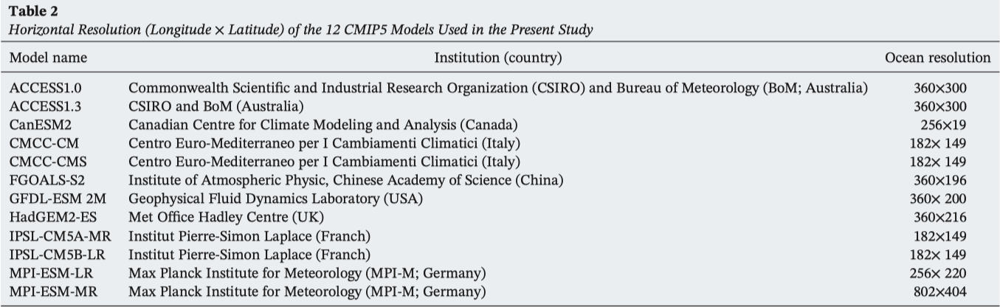
2. What methods did the author use?
- MHW definition
3. what are their most important findings or conclusions (up to 3)?
4. what do you find most interesting about their research?
5. would you have done the research differently, to improve it, if it was you doing it?
6. Results
-
Figure 1
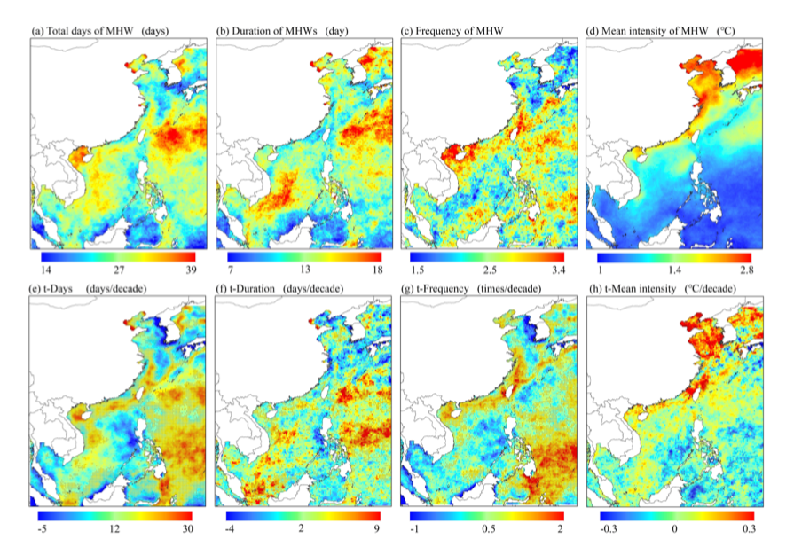
(a,b,c,d): annual mean, (e,f,g,h): linear trend
- in the South China Sea, where the higher‐value area is closer to the lower‐latitude direction.
- The high annual mean total days in the northern South China Sea mainly result from the high frequency of MHWs, while those in the Bohai Sea result from a longer duration
-
Figure 3
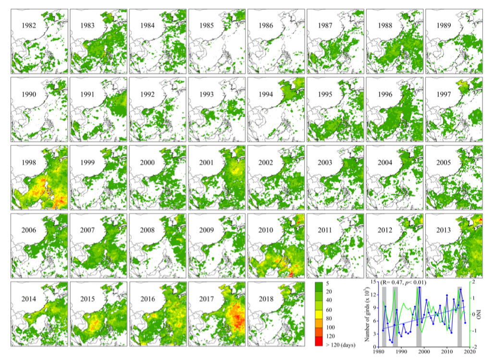
sdfs
-
Figure 3
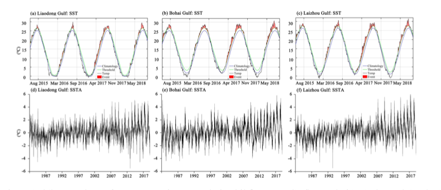
fsdf
sfds
-
Figure 4.
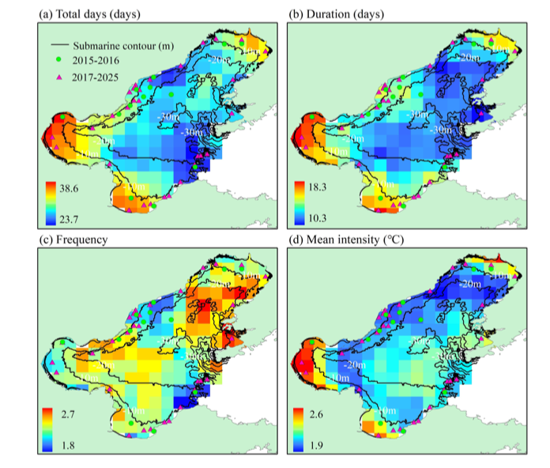
sfs
-
Figure 5
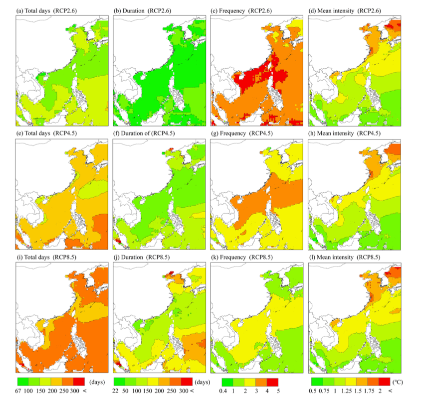
sfs
-
Fiugre 6
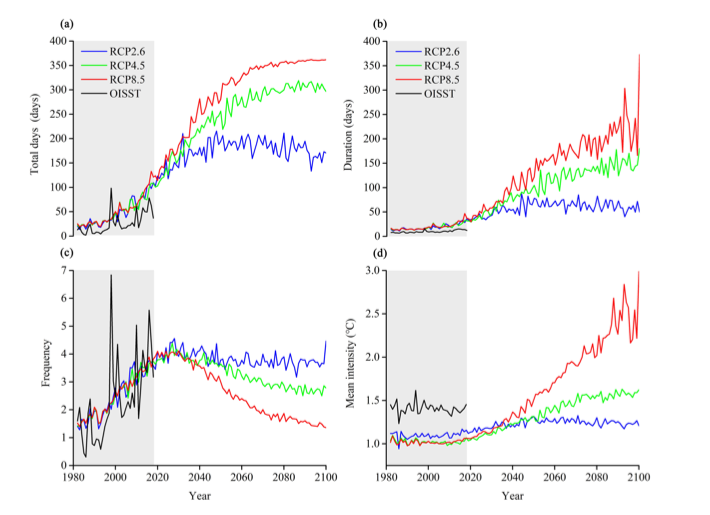
-
Figure 7
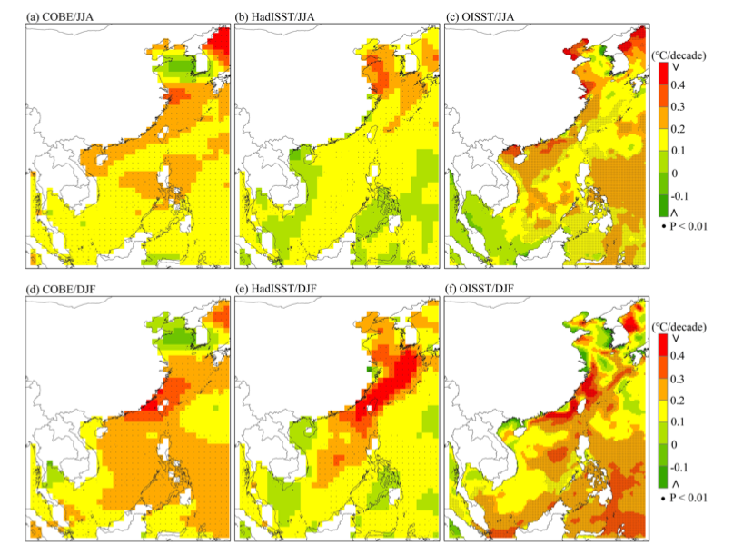
-
Figure 8
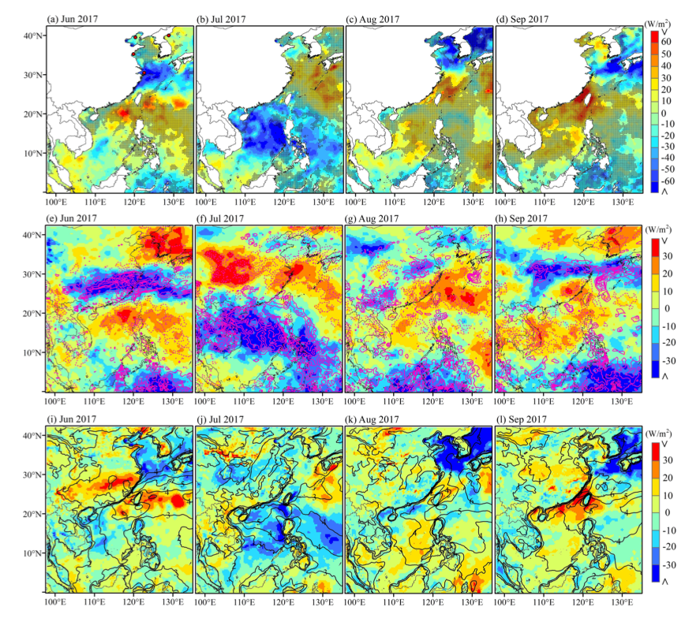
-
Figure 9
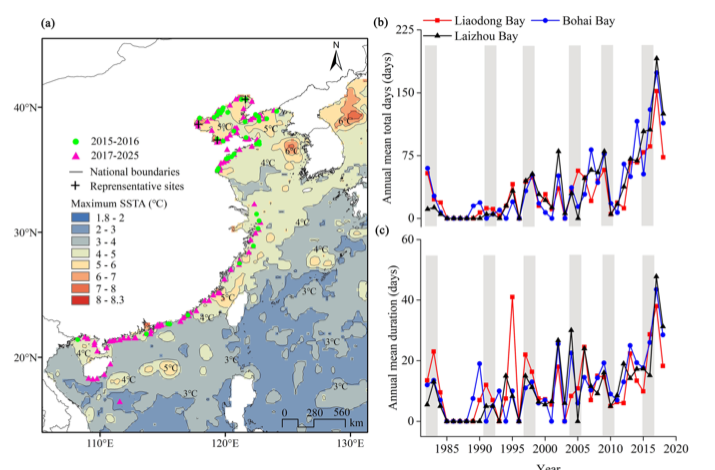
fs
-
Figure 10.
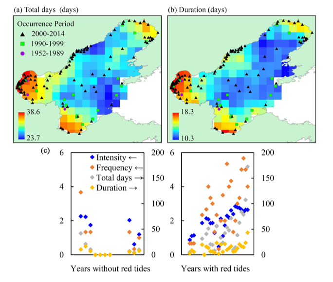
-
fsdf